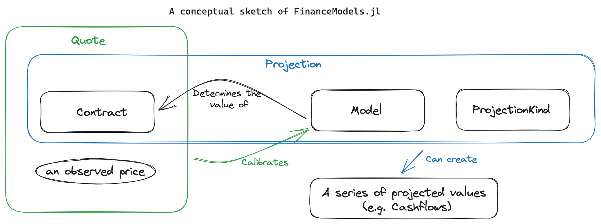

This August 2023 article describes the original FinanceModels 4 interface. Its extension hooks, projection examples and non-linear bootstrap calls are historical. For FinanceModels 7, use the current package examples, migration guide and fall 2026 release overview. The current hooks are FinanceModels.default_variables and FinanceModels.default_optimizer; valuation uses present_value(ctx, contract).
Yields.jl has evolved into FinanceModels.jl. The benefits are:
- Provide a composable set of contracts and
Quotes - Those contracts, when combined with a model produce a
Cashflowvia a flexibly definedProjection - models can be
fitwith a new unified API:fit(model_type,quotes,fit_method)
This blog post describes the conceptual overview and motivation for the change.
Finance Models Overview
FinanceModels.jl provides a set of composable contracts, models, and functions that allow for modeling of both simple and complex financial instruments. The resulting models, such as discount rates or term structures, can then be used across the JuliaActuary ecosystem to perform actuarial and financial analysis.

1. Cashflow - a fundamental financial type
Say you wanted to model a contract that paid quarterly payments, and those payments occurred starting 15 days from the valuation date (first payment time = 15/365 ≈ 0.041)
Previously, you had two options:
- Choose a discrete timestep to model (e.g. monthly, quarterly, annual) and then lump the cashflows into those timesteps. E.g. with monthly timesteps of a unit payment of our contract, it might look like:
[1,0,0,1,0,0...] - Keep track of two vectors: one for the payment and one for the times. In this case, that might look like:
cfs = [1,1,...];times =[0.041, 0.291...]
The former has inaccuracies due to the simplified timing and logical complication related to mapping the contracts natural periodicity into an arbitrary modeling choice. The latter becomes unwieldy and fails to take advantage of Julia’s type system.
The new solution: Cashflows. Our example above would become: [Cashflow(1,0.041), Cashflow(1,0.291),...]
2. Contracts - A composable way to represent financial instruments
Contracts are a composable way to represent financial instruments. They are, in essence, anything that is a collection of cashflows. Contracts can be combined to represent more complex instruments. For example, a bond can be represented as a collection of cashflows that correspond to the coupon payments and the principal repayment.
Examples:
- a
Cashflow Bonds:Bond.Fixed,Bond.Floating
Options:Option.EuroCallandOption.EuroPut
- Compositional contracts:
Forwardto represent an instrument that is relative to a forward point in time.Compositeto represent the combination of two other instruments.
In the future, this notion may be extended to liabilities (e.g. insurance policies in LifeContingencies.jl)
Creating a new Contract
A contract is anything that creates a vector of Cashflows when collected. For example, let’s create a bond which only pays down principle and offers no coupons.
using FinanceModels,FinanceCore
# Transducers is used to provide a more powerful, composable way to construct collections than the basic iteration interface
using Transducers: Transducers, __foldl__, @next, complete
"""
A bond which pays down its par (one unit) in equal payments.
"""
struct PrincipalOnlyBond{F<:FinanceCore.Frequency} <: FinanceModels.Bond.AbstractBond
frequency::F
maturity::Float64
end
# We extend the interface to say what should happen as the bond is projected
# There's two parts to customize:
# 1. any initialization or state to keep track of
# 2. The loop where we decide what gets returned at each timestep
function Transducers.__foldl__(rf, val, p::Projection{C,M,K}) where {C<:PrincipalOnlyBond,M,K}
# initialization stuff
b = p.contract # the contract within a projection
ts = Bond.coupon_times(b) # works since it's a FinanceModels.Bond.AbstractBond with a frequency and maturity
pmt = 1 / length(ts)
for t in ts
# the loop which returns a value
cf = Cashflow(pmt, t)
val = @next(rf, val, cf) # the value to return is the last argument
end
return complete(rf, val)
endThat’s it! then we can use this contract to fitting models, create projections, quotes, etc. Here we simply collect the bond into an array of cashflows:
julia> PrincipalOnlyBond(Periodic(2),5.) |> collect
10-element Vector{Cashflow{Float64, Float64}}:
Cashflow{Float64, Float64}(0.1, 0.5)
Cashflow{Float64, Float64}(0.1, 1.0)
Cashflow{Float64, Float64}(0.1, 1.5)
Cashflow{Float64, Float64}(0.1, 2.0)
Cashflow{Float64, Float64}(0.1, 2.5)
Cashflow{Float64, Float64}(0.1, 3.0)
Cashflow{Float64, Float64}(0.1, 3.5)
Cashflow{Float64, Float64}(0.1, 4.0)
Cashflow{Float64, Float64}(0.1, 4.5)
Cashflow{Float64, Float64}(0.1, 5.0)Note that all contracts in FinanceModels.jl are currently unit contracts in that they assume a unit par value. Scale assets down to unit values before constructing the default contracts.
More complex Contracts
When the cashflow depends on a model. An example of this is a floating bond where the coupon paid depends on a view of forward rates. See Section 6 - Projections for how this is handled.
3. Quotes - The observed price we need to fit a model to
Quotes are the observed prices that we need to fit a model to. They represent the market prices of financial instruments, such as bonds or swaps. In the context of the package, a quote is defined as a pair of a contract and a price.
For example, a par yield bond paying a 4% coupon (paid as 2% twice per annum) implies a price at par (i.e. 1.0):
julia> ParYield(Periodic(0.04,2),10)
Quote{Float64, FinanceModels.Bond.Fixed{Periodic, Float64, Int64}}(
1.0,
FinanceModels.Bond.Fixed{Periodic, Float64, Int64}(0.040000000000000036, Periodic(2), 10))A number of convenience functions are included to construct a Quote:
ZCBPriceandZCBYieldParYieldCMTYieldOISYieldForwardYields
4. Models - Not just yield curves anymore
- Yield Curves: all of Yields.jl yield models are included in the initial FinanceModels.jl release
- Equities and Options: The initial release includes
BlackScholesMertonoption pricing and one can use constant or spline volatility models - Others more to come in the future
Creating a new model
Here we’ll do a complete implementation of a yield curve model where the discount rate is approximated by a straight line (often called an AB line from the y=ax+b formula.
using FinanceModels, FinanceCore
using AccessibleOptimization
using IntervalSets
struct ABDiscountLine{A} <: FinanceModels.Yield.AbstractYieldModel
a::A
b::A
end
ABDiscountLine() = ABDiscountLine(0.,0.)
function FinanceCore.discount(m::ABDiscountLine,t)
#discount rate is approximated by a straight line, floored at 0.0 and capped at 1.0
clamp(m.a*t + m.b, 0.0,1.0)
end
# `@optic` indicates what in our model variables needs to be updated (from AccessibleOptimization.jl)
# `-1.0 .. 1.0` says to bound the search from negative to positive one (from IntervalSets.jl)
FinanceModels.__default_optic(m::ABDiscountLine) = OptArgs([
@optic(_.a) => -1.0 .. 1.0,
@optic(_.b) => -1.0 .. 1.0,
]...)
quotes = ZCBPrice([0.9, 0.8, 0.7,0.6])
m = fit(ABDiscountLine(),quotes)Now, m is a model like any of the other yield curve models provided and can be used in that context. For example, calculating the price of the bonds contained within our quotes where we indeed recover the prices for our contrived example:
julia> map(q -> pv(m,q.instrument),quotes)
4-element Vector{Float64}:
0.9
0.8
0.7
0.65. fit - The standardized API for all models, quotes, and methods
Model Method
| |
|------------| |---------------|
fit(Spline.Cubic(), CMTYield.([0.04,0.05,0.055,0.06,0.065],[1,2,3,4,5]), Fit.Bootstrap())
|-------------------------------------------------|
|
Quotes- Model could be
Spline.Linear(),Yield.NelsonSiegelSvensson(),Equity.BlackScholesMerton(...), etc. - Quote could be
CMTYields,ParYields,Option.EuroCall, etc. - Method could be
Fit.Loss(x->x^2),Fit.Loss(x->abs(x)),Fit.Bootstrap(), etc.
The benefit of this versus the old Yields.jl API is:
- Without a generic
fitmethod, no obvious way to expose different curve construction methods (e.g. choice of model and method) - The
fitis extensible. Users or other packages could define their own Models, Quotes, or Methods and integrate into the JuliaActuary ecosystem. - The
fitformulation is very generic: the required methods are minimal to integrate in order to extend the functionality.
Customizing model fitting
Model fitting can be customized:
- The loss function (least squares, absolute difference, etc.) via the third argument to
fit:- e.g.
fit(ABDiscountLine(), quotes, Fit.Loss(x -> abs(x))) - the default is
Fit.Loss(x->x^2)
- e.g.
- the optimization algorithm by defining a method
FinanceModels.__default_optim(m::ABDiscountLine) = OptimizationOptimJL.Newton()- you may need to change the
__default_opticto be unbounded (simply omit the=>and subsequent bounds) - The default is OptimizationMetaheuristics.ECA()
- you may need to change the
- The general algorithm can be customized by creating a new method for fit:
function FinanceModels.fit(m::ABDiscountLine, quotes, ...)
# custom code for fitting your model here
end- As an example, the splines (
Spline.Linear(),Spline.Cubic(),…) are defined to use bootstrap by default:fit(mod0::Spline.BSpline, quotes, method::Fit.Bootstrap)
Using models without fitting
While many of the examples show models being fit to observed prices, you can skip that step in practice if you want to define an assumed valuation model that does not intend to calibrate market prices.
6. Projections
A Projection is a generic way to work with various data that you can project forward. For example, getting the series of cashflows associated with a contract.
What is a Projection?
struct Projection{C,M,K} <: AbstractProjection
contract::C # the contract (or set of contracts) we want to project
model::M # the model that defines how the contract will behave
kind::K # what kind of projection do we want? only cashflows?
endcontract is obvious, so let’s talk more about the second two:
modelis the same kind of thing we discussed above. Some contracts (e.g. a floating rate bond). We can still decompose a floating rate bond into a set of cashflows, but we need a model.- There are also projections which don’t need a model (e.g. fixed bonds) and for that there’s the generic
NullModel()
- There are also projections which don’t need a model (e.g. fixed bonds) and for that there’s the generic
kinddefines what we’ll return from the projection.CashflowProjection()says we just want aCashflow[...]vector- … but if we wanted to extend this such that we got a vector containing cashflows, capital factors, default rates, etc we could define a new projection type (e.g. we might call the above
AssetDetailProjection() - As of the time of announcement, only
CashflowProjection()is defined by FinanceModels.jl
Contracts that depend on the model (or multiple models)
For example, the cashflows you generate for a floating rate bond is the current reference rate. Or maybe you have a stochastic volatility model and want to project forward option values. This type of dependency is handled like this:
- define
modelas a relation that maps a key to a model. E.g. aDict("SOFR" => NelsonSiegelSvensson(...)) - when defining the logic for the reducible collection/foldl, you can reference the
Projection.modelby the associated key.
Here’s how a floating bond is implemented:
The contract struct. The key would be “SOFR” in our example above.
struct Floating{F<:FinanceCore.Frequency,N<:Real,M<:Timepoint,K} <: AbstractBond
coupon_rate::N # coupon_rate / frequency is the actual payment amount
frequency::F
maturity::M
key::K
endAnd how we can reference the associated model when projecting that contract. This is very similar to the definition of __foldl__ for our PrincipalOnlyBond, except we are paying a coupon and referencing the scenario rate.
@inline function Transducers.__foldl__(rf, val, p::Projection{C,M,K}) where {C<:Bond.Floating,M,K}
b = p.contract
ts = Bond.coupon_times(b)
for t in ts
freq = b.frequency # e.g. `Periodic(2)`
freq_scalar = freq.frequency # the 2 from `Periodic(2)`
# get the rate from the current time to next payment
# out of the model and convert it to the contract's periodicity
model = p.model[b.key]
reference_rate = rate(freq(forward(model, t, t + 1 / freq_scalar)))
coup = (reference_rate + b.coupon_rate) / freq_scalar
amt = if t == last(ts)
1.0 + coup
else
coup
end
cf = Cashflow(amt, t)
val = @next(rf, val, cf)
end
return complete(rf, val)
end7. ProjectionKinds
While CashflowProjection is the most common (and the only one built into the initial release of FinanceModels), a Projection can be created which handles different kinds of outputs in the same manner as projecting just basic cashflows. For example, you may want to output an amortization schedule, or a financial statement, or an account value roll-forward. The Projection is able to handle these custom outputs by dispatching on the third element in a Projection.
Let’s extend the example of a principle-only bond from section 2 above. Our goal is to create a basic amortization schedule which shows the payment made and outstanding balance.
First, we create a new subtype of ProjectionKind:
struct AmortizationSchedule <: FinanceModels.ProjectionKind
endAnd then define the loop for the amortization schedule output:
# note the dispatch on `AmortizationSchedule` in the next line
function Transducers.__foldl__(rf, val, p::Projection{C,M,K}) where {C<:PrincipalOnlyBond,M,K<:AmortizationSchedule}
# initialization stuff
b = p.contract # the contract within a projection
ts = Bond.coupon_times(b) # works since it's a FinanceModels.Bond.AbstractBond with a frequency and maturity
pmt = 1 / length(ts)
balance = 1.0
for t in ts
# the loop which returns a tuple of the relevant data
balance -= pmt
result = (time=t,payment=pmt,outstanding=balance)
val = @next(rf, val, result) # the value to return is the last argument
end
return complete(rf, val)
endWe can now define the projection:
julia> p = Projection(
PrincipalOnlyBond(Periodic(2),5.), # our contract
NullModel(), # the projection doesn't need a model, so use the null model
AmortizationSchedule(), # specify the amortization schedule output
);And then collect the values:
julia> collect(p)
10-element Vector{NamedTuple{(:time, :payment, :outstanding), Tuple{Float64, Float64, Float64}}}:
(time = 0.5, payment = 0.1, outstanding = 0.9)
(time = 1.0, payment = 0.1, outstanding = 0.8)
(time = 1.5, payment = 0.1, outstanding = 0.7000000000000001)
(time = 2.0, payment = 0.1, outstanding = 0.6000000000000001)
(time = 2.5, payment = 0.1, outstanding = 0.5000000000000001)
(time = 3.0, payment = 0.1, outstanding = 0.40000000000000013)
(time = 3.5, payment = 0.1, outstanding = 0.30000000000000016)
(time = 4.0, payment = 0.1, outstanding = 0.20000000000000015)
(time = 4.5, payment = 0.1, outstanding = 0.10000000000000014)
(time = 5.0, payment = 0.1, outstanding = 1.3877787807814457e-16)Development Benefits
In addition to the more composable code for the end-user, the package itself has been able to be simplified. Compared to Yields.jl, the lines of source code have been reduced by 30% while the number of lines of documentation has increased by over 20%.
Migration Guide
For those looking to upgrade from Yields (v3.x.x) to FinanceModels (v4+), there is a migration guide here. Associated packages ActuaryUtilities.jl and FinanceCore.jl had major version releases for minor breaking changes where most code should remain unaffected (FinanceCore is not intended to be user-facing).
Some tutorials or examples on the site may still use Yields.jl - that’s okay as they will still work given Julia’s strong degree of reproducibility and dependency management tools. Please open an issue on the JuliaActuary.org repository if you have trouble with any of the old example code.
Conclusion
In this post we’ve now defined two assets that can work seamlessly with projecting cashflows, fitting models, and determining valuations :)
FinanceModel.jl should provide the basis for a performant and composable design to facilitate further development and use by actuaries and other financial professionals.